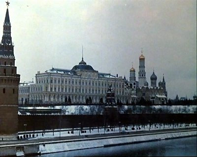
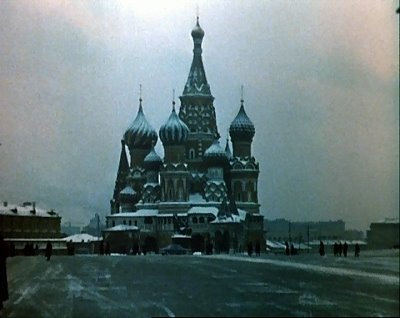

Moscow
Red Square


DANGER MAN: To Our Best
Friend
(Patrick McGoohan:
1965)
A British double agent is about to make a report to controller, but who
is
reporting to whom?
DEPARTMENT S: The Perfect
Operation
(Cyril Frankel: February 1969)
Stewart Sullivan flies to Moscow to talk to Professor Uri Dutrov
to see if he had operated on Peregrine Haslet-Wood.
THE NEW AVENGERS: K is for Kill
Part One: The Tiger Awakes (Yvon Marie Coulais: Summer 1977)
Establishing shot
Spotted by Mike Richardson, 2012
Return to
Index